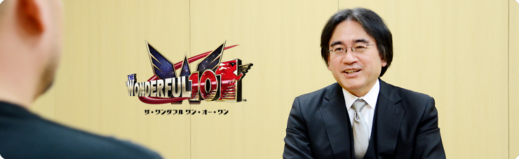
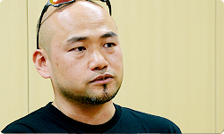
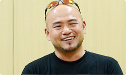

<div class="l-category-local-header">
<div class="category-local-header">
<div class="category-local-heading"><span>社長が訊く</span>
<div class="category-local-sub">IWATA ASKS


<div class="l-soft-topic-path is-block">
<div class="l-soft-topic-path-inner">
<div class="soft-topic-path">
<ul class="topic-path"><li class="topic-path-item"><span>The Wonderful 101</span></li></ul>


<div id="page-container">
<header class="interviewheader">
<h2 class="interviewheader__ttl"><span class="subtext">社長が訊く</span>『The Wonderful 101』</h2>

</header>
<div class="tabmenu-container">
<p class="tabmenu__ttl">シリーズ一覧
<ul class="tabmenu__body tabnum2">
<li class="tabmenu__item tab1">神谷 英樹さん 篇</li>
<li class="tabmenu__item tab2">開発スタッフ 篇</li>
</ul>

<div class="hero-container">
<div class="hero__img">


<div class="interviewsubheader">
<div class="interviewsubheader__ttl"><h2>神谷 英樹さん 篇</h2>

<div class="pageindex-container">
<p class="pageindex__ttl">目次
<ul class="pageindex__body">
<li class="pageindex__item">1. ファミコン長者</li>
<li class="pageindex__item">2. リアル信者バトル</li>
<li class="pageindex__item active">3. 「遊んできたものの中に、答えがある」</li>
<li class="pageindex__item">4. 三上さんとの出会い</li>
<li class="pageindex__item">5. 「ゲームの神様が降りてくる」</li>
</ul>

<div class="interview-container">
<h3 class="interview__ttl">3. 「遊んできたものの中に、答えがある」</h3>

岩田
: 神谷さんはアーケードゲームも<br>かなり遊ばれてるんですね。


神谷
: はい。予備校のゲーセン通いを機に、<br>８０年代のアーケード黄金時代は<br>とくに濃く、リアルに体験しています。<br>当時はお店に新しい基板や筐体が<br>搬入されてくると、<br>みんなザワッとするんですよね。<br>「あっ、来たぞ！」って言って。


岩田
: 「隣町に××が入ったぞ」とか聞くと、<br>遠方でもわざわざ足を運んでまで遊びに行く熱量が<br>当時のゲーム好きのみんなには、ありましたよね。


神谷
: 中学の頃の話に戻るんですけど、<br>さっき言った駅前のゲーセンは学区外で、<br>子供だけで行ってはいけない校則があったんです。<br>唯一、学校の近くにあるバッティングセンターに<br>小さなゲームコーナーがあって、<br>遊ぶとしたらそこしかなかったんですけれど、<br>１プレイ１００円だったんですね。<br>ゲーセンは５０円なのに・・・。


岩田
: その差は大きいですね（笑）。<br>「校則を守って１００円か、危険をおかして５０円か？」<br>で、迷うわけですか？


神谷
: そうですね。最初はみんな仕方なく、<br>バッティングセンターに行ってたんです。<br>ところが中２の時、町田君っていう、<br>転入生がやって来たんですね。<br>町田君は都会からやってきた子で、<br>ちょっとアカぬけた感じの子供なんですけど。


岩田
: はい。


神谷
: ちょうどその頃、バッティングセンターに<br>『ドラゴンバスター』（※17）が入ったという情報を<br>キャッチしたんですよ。<br>それで「土曜日にやりにいこうぜ」って<br>仲間同士で示し合わせていたんです。<br>その時に「マッチも行こうぜ」って、<br>町田君にも声をかけたら、彼が<br>「バッティングセンターは高いからゲーセン行こうぜ」<br>って、当たり前みたいに言うんですよ。<br>それで僕らみんな、ざわめいてしまって。





※17『ドラゴンバスター』＝ナムコ（現バンダイナムコゲームス）が１９８５年１月にアーケードでリリースしたアクションゲーム。１９８７年１月にはファミコンにも移植された。


岩田
: ははは（笑）。


神谷
: 当時の自分たちにとって、<br>「ゲーセンは不良が行くところ」みたいな<br>イメージがあったんですね。<br>だからみんな最初動揺したんですけど、<br>同時にワルにあこがれる<br>気持ちもあるじゃないですか。<br>それで結局「マッチ、連れてって」って言って<br>マッチの行きつけのゲーセンに・・・。


岩田
: あっ、行きつけがあったんですか。<br>どっちが転校生だかわからないですね（笑）。


神谷
: 来てからちょくちょく、行ってたんでしょうね。<br>それでドキドキしながら、<br>マッチの行きつけのゲーセンに行ったんです。<br>それでアドバタイズデモ（※18）を見ながら、<br>「どのゲームやろうかな」って悩んで。<br>５０円とはいえ貴重なおこづかいなので、<br>後悔しないよう、人のプレイも見ながら<br>頭でシミュレーションして熟考していたんです。

※18アドバタイズデモ＝ゲームがプレイされていないときに表示される、ゲーム中のデモシーンなどを指す。


岩田
: その時間も楽しいんですよね、振り返ると。


神谷
: そうですね。でもそうこうするうちに<br>外が暗くなってきて「もう帰ろうぜ」って、<br>誰かが言い出したんです。<br>ところが僕はまだ吟味だけで<br>何も遊んでなかったので、<br>「ちょっと待って、ひとつだけやらせて」<br>って言って、待ってもらって。


岩田
: はい。


神谷
: その時はじめて遊んだのは、<br>いちばんルールがわかりやすかった<br>『ロードファイター』（※19）でした。<br>あれが、僕のゲーセン初コイン投入でした。<br>その日はそれ１回だけやって帰ったんですけど、<br>それから毎週土曜はゲーセンの日になりました。





※19『ロードファイター』＝コナミが１９８４年にアーケードでリリースしたレースゲーム。真上からの視点でコースが表示され、高速スクロールする道路を疾走し、敵車や障害物を避けながら燃料切れになるまでにゴールを目指す。


岩田
: タガがはずれて、<br>ゲーセンの味をしめたわけですね。


神谷
: まあ、それで勉強もしないで、<br>案の定高校入試に失敗するわけですけれど。<br>でもその予備校時代の１年がとにかく濃くて、<br>それが高校生活にも引き継がれた感じでした。


岩田
: なるほど。でもそんなふうに<br>ゲームを人生の一部として遊びこんだことが、<br>確実に財産になっていますよね。


神谷
: なってますね。たとえば<br>集めたアイテムを画面に表示する場合、<br>単にアイテム名を列記するだけじゃなくて、<br>『ドルアーガの塔』（※20）みたいに<br>アイテムのグラフィックをズラッと並べたほうが、<br>圧倒的にワクワクするじゃないですか。<br>そういう直感的なわかりやすさや美学を、<br>昔のシンプルなアーケードから<br>知らずに学んでいるところはあると思います。

※20『ドルアーガの塔』＝１９８４年７月にナムコ（現バンダイナムコゲームス）よりアーケードでリリースされた、アクションゲーム。１９８５年８月にはファミコンにも移植された。６０階建ての塔の各フロアに隠されたアイテムを、条件を満たし謎を解くことで収集し、最上階に幽閉された王女を助けるのが目的。ゲームデザインは『ゼビウス』を手がけた遠藤雅伸氏が担当。


岩田
: そういうことは意外と、<br>何となく遊ぶだけではなかなか気づかない<br>ことだと思うんですよ。<br>だけど一方でちゃんと理解できると、<br>いま神谷さんが語られたように<br>自分の中で整理された状態で、<br>引き出しからすぐ出し入れできるんです。<br>神谷さんはどうやって<br>そんな視点を持つようになったんですか？


神谷
: うーん。いや、僕は変わってないですね。


岩田
: 最初から引き出しに入っていたんでしょうか？


神谷
: いえ、たぶんちゃんとした引き出しには<br>いまも入ってないんです。<br>たとえば『ビューティフルジョー』（※21）をつくるとき<br>自分でマップをつくったんですけれど、<br>最初はぜんぜん、楽しいものがつくれなくて。

※21『ビューティフルジョー』＝２００３年６月にカプコンよりゲームキューブ用ソフトとして発売された横スクロールアクションゲーム。デフォルメされたアメコミ調のグラフィックや、ＶＦＸアクションと呼ばれる時間や空間を操るアクションが特徴で、シリーズ化およびテレビアニメ化もされている。


岩田
: 『ビューティフルジョー』は<br>ゲームキューブ向けにつくられた<br>完全新作アクションでしたよね。


神谷
: はい。当時カプコンで上司だった三上さん（※22）から、<br>「企画マンとしてひとりでやってみろ」という<br>指令を受けてはじめた開発タイトルでした。<br>その前にかかわっていた『バイオ２』（※23）や<br>『デビルメイクライ』（※24）は<br>大所帯のチームでつくっていたので、<br>自分が企画を立ててすみずみまで<br>つくるというのははじめての経験でした。

※22三上さん＝三上真司さん。元カプコン第４開発部部長。『バイオハザード』シリーズ４作目までのディレクター、プロデューサーを歴任。現在は、Tango Gameworks エグゼクティブプロデューサー。
※23『バイオ２』＝『バイオハザード２』。１９９８年１月にカプコンより発売されたホラーアクションアドベンチャー。
※24『デビルメイクライ』＝２００１年８月にカプコンより発売されたアクションゲーム。“スタイリッシュハードアクション”と銘打ち、華麗でスピーディな展開で、派手に敵を倒していく演出が話題を呼び、シリーズ化されている。


岩田
: ゼロから自分でつくることを、<br>はじめてそこで体験したわけですね。


神谷
: 他人が描いたマップを<br>チェックすることはそれまでもあったんですが、<br>自分でつくるのははじめてだったんです。


岩田
: たぶんそれは、三上さんが、<br>「神谷さんを育てたい」と思ったことも<br>大きな理由のひとつなんでしょうね。


神谷
: それはあるでしょうね。<br>三上さんもファミコンの８ビット時代を<br>生きてきた人なので、<br>比較的少人数で企画から立ち上げる<br>経験をさせたいという<br>気持ちはあったと思います。


岩田
: なるほど。


神谷
: ただ、いざ自分でマップをつくってみると、<br>僕はあまり物事を合理的に考えずに<br>感覚でものをつくるタイプだったので、<br>あとからいろんな矛盾が出てくるわけです。<br>たとえば最初、ジャンプする足場を<br>つくったんですけど、結局はぜんぜん使わずに<br>地面を歩いたほうがよかったりして。


岩田
: はい。


神谷
: どうもおもしろくないので、<br>Ｖフィルム（※25）というアイテムを空中に置いて、<br>ジャンプさせようとしたんですね。<br>それで、ジャンプの放物線にあわせて<br>Ｖフィルムを置いていったときにふと、<br>「あっ、これ『スーパーマリオ』の<br>　コインと同じ仕組みじゃん！」<br>っていう具合に、あとから気づくんです。

※25Ｖフィルム＝ゲームを進めるカギとなるＶＦＸパワーの源となるアイテム。


岩田
: ええっ、そうなんですか？<br>体験自体は未整理のままなんだけど、<br>試行錯誤しているうちに<br>昔の体験からヒントがみつかって、<br>照らし合わせながらつくるわけですか？


神谷
: そうですね。<br>「あのゲームはこうだったから、こうしよう」<br>というように最初から考えを整理して<br>つくっていくんではなくて、<br>本当にその時にハッと気づいて<br>「あっ、だからあれはこうなっていたのか」<br>という感じです。そこではじめて、<br>「オレは遊ばされてたんだ」<br>というふうに気づくわけです。


岩田
: はい（笑）。


神谷
: そういう意味では、<br>『ビューティフルジョー』の開発で<br>「遊んできたものの中に、大事な答えがある」<br>ということを、あらためて実感しました。<br>それがあってからは遊びの構造を<br>以前より強く意識するようになりましたね。


<li class="pagination-prev"><span>2. リアル信者バトル</span></li>
<li class="pagination-next"><span>4. 三上さんとの出会い</span></li>
</ul>
<div class="listbtn-container">
<p class="listbtn__item">社長が訊く 一覧

